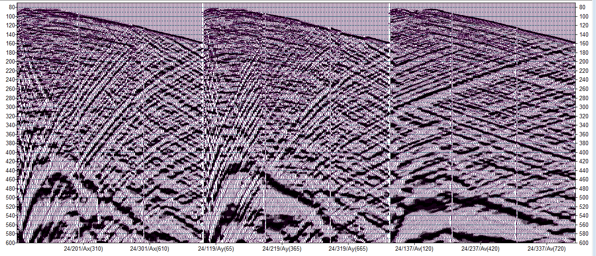

HDVSP
High-Definition Seismic Corporation is pleased to offer HDVSP™ - full wave high definition Vertical Seismic Profiles for shallow plays.
For over 8 years, HDSC has been the leading provider of high quality VSPs in the Canadian Oil Sands region. Our custom built array was designed to solve the challenge of covering the whole well in one go without spatial aliasing of the data.
The result is data that our clients have described as: "Spectacular"; "The best I have ever seen"; "Amazing", "Night and day difference [compared to previous VSPs]".
Key features
- Sensors deployed from top to bottom of the well;
- 360 levels currently available;
- Tight spatial sampling (1m or 2m intervals) to minimise spatial aliasing;
- 100's of sensors can be deployed in one or more wells;
- True digital MEMS three component sensors (based on INOVA Geophysical's VectorSeis® sensors);
- Excellent vector fidelity;
- Linear phase and frequency response;
- No mechanical resonance;
- Accurate and repeatable placement of the sensors;
- Multiple wells can be live at the same time;
- Deeper targets, to 1000m, can be accomodated with one move of the array;
- Can be sent by air freight for overseas projects.
- Customization: Cables with different receiver intervals can be built to meet the clients requirements. Depths to about 1500m can be acheived with a receiver interval of 6m.
Please contact us to see if your next VSP can be in HD.
Testimonial
“HDSC has a unique recording system that covers the entire well from surface to TD with closely spaced 3C receivers (1 meter spacing). This ultra-dense configuration minimizes spatial aliasing. HDSC has completed the field acquisition of several 2D walkaway and 3D VSP surveys under my supervision in a very courteous and professional manner. The recorded data were broadband ranging from 3Hz to over 300Hz and the best that I have seen in the industry. I highly recommend HDSC!”
Sylvestre Charles, PhD
Geophysicist Consultant
Serious Waves Inc.
